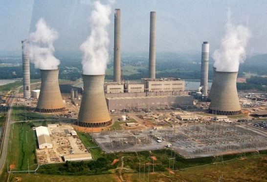

What is air pollution?
Air pollution (say: po-loo-shun) occurs when gases, dust particles, fumes (or smoke) or odour are introduced into the atmosphere in a way that makes it harmful to humans, animals and plant. This is because the air becomes dirty (contaminated or unclean).
The Earth is surrounded by a blanket of air (made up of various gases) called the atmosphere. The atmosphere helps protect the Earth and allow life to exist. Without it, we would be burned by the intense heat of the sun during the day or frozen by the very low temperatures at night.
Any additional gas, particles or odours that are introduced into the air (either by nature or human activity) to distort this natural balance and cause harm to living things can be called air pollution.

Things that pollute the air are called pollutants. Examples of pollutants include nitrogen oxides, carbon monoxides, hydrocarbons, sulphur oxides (usually from factories), sand or dust particles, and organic compounds that can evaporate and enter the atmosphere.
There are two types of pollutants:
Primary pollutants are those gases or particles that are pumped into the air to make it unclean. They include carbon monoxide from automobile (cars) exhausts and sulfur dioxide from the combustion of coal.
Secondary pollutants:
When pollutants in the air mix up in a chemical reaction, they form an even more dangerous chemical. Photochemical smog is an example of this, and is a secondary pollutant.